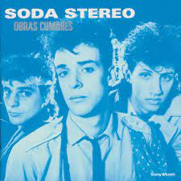
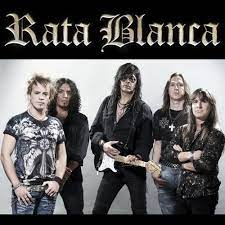

Soda Estereo

Soda Stereo es una banda del Rock alternativo formada en Buenos Aires, Argentina en 1982 por Gustavo Cerati (voz y guitarra), Zeta Bosio (bajo) y Charly Alberti (batería), considerada ampliamente por la crítica especializada como la banda más importante, popular e influyente de rock en español de todos los tiempos y una leyenda de la música latinoamericana. Fueron el primer grupo de habla hispana en conseguir un éxito masivo en Latinoamérica y tuvieron un papel muy importante en el desarrollo y la difusión del rock latinoamericano y el rock en español durante las décadas de 1980 y 1990
Patriciio Rey

Patricio Rey y sus Redonditos de Ricota, también conocidos como Los Redondos, fue un grupo musical de rock argentino formado en La Plata en el año 1976 e integrado, en su mayor parte, por el Indio Solari (voz y composición), Skay Beilinson (guitarra y composición), Semilla Bucciarelli (bajo), Walter Sidotti (batería) y Sergio Dawi (saxofón, armónica y piano). Es considerado uno de las grupos más importantes e influyentes de la historia de la música de Argentina, así como también uno de los más convocantes en términos de audiencia
Rata Blanca

Rata Blanca es un grupo musical argentino de hard rock y heavy metal formado en 1985 en la zona del Bajo Flores, barrio ubicado al sur de la ciudad de Buenos Aires. Se lo considera como una de los más importantes e influyentes del hard rock y heavy metal en español, aunque durante su carrera también han incorporado pesados riffs con estructuras melódicas y armónicas de la música clásica. Con los años han sido clasificados en distintos subgéneros, sin embargo el grupo se considera simplemente "rock metálico"